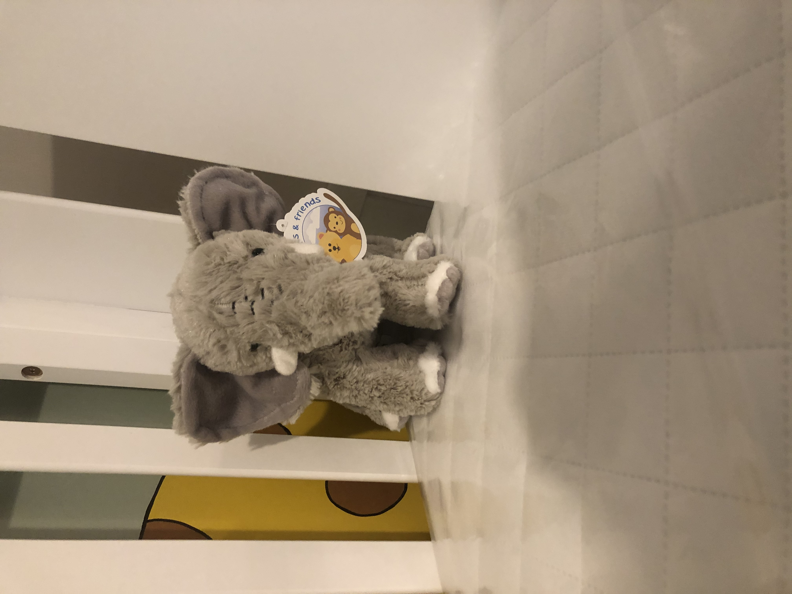

The 16-week Scan
We've waited for this day for 5 weeks. Being honest here, when I found out Sarah was pregnant I did want a boy first. I'd like to point out that my feelings have changed since then and I really didn't mind if I had a daughter or son. As long as the baby has 2 arms, 2 legs, a head, 2 eyes, healthy organs and so on, I'm going to happy. I don't know why I wanted a boy first. I guess it's because I feel that I would have been more protective if I had a daughter. Especially when she got older. No man will be good enough! :D.
Like the 10-week scan, we booked privately because we really enjoyed our expierence. The staff at the clinic are really wonderful and they make the scans very exciting. We booked a well-being scan and finding out the gender is a bonus. I won't go into too much detail but, Sarah had a blood test done (on the NHS) and she had a letter to say that one of her hormone levels was lower than it should be. Of course, me being me, I researched this on the internet because I like to give myself a good fright. Honestly I keep saying it to myself and have said it to other people but, try not to read about medical stuff online! They really do give you a fright. After receiving this letter, we just wanted to make sure our baby was growing at a good rate so this was the main reason for this visit. If they could idenfify the gender, then this was an bonus really.
The appointment was midday, so the morning was dragging. It was like waiting for a flight at the airport when you just want to get going. My dad and step-mother were popping over in the afternoon to drop off some plant pots (exciting, I know) and as a gender reveal, Sarah thought of buying face masks. Blue for a boy, pink for a girl. I wasn't too keen on the idea first because I didn't want to associate our baby with this bloody coronavirus. But, it was qwerky so I went for it.
I was quite nervous again when we were driving to the clinic. I believe its because I really wanted our baby to be growing ok. I was still very excited to see how big the baby is getting on the screen. We were escorted into the sonographer's room, gel applied to Sarah's tummy and there it was! On the big screen we could clearly see the spine, the head, the arms and the legs! It was amazing to see the difference from the 10 week scan. The sonographer was brilliant. She went through a lot of different angles with us and it was like a guided tour. We heard the baby's heartbeat which was very emotional. It was a good, strong heartbeat with a good rhythm. She pointed out the lungs, the stomach and the bladder. Measured the head circumference and the femur bone. Our baby was growing brilliant! I was so happy. At one point, the sonographer changed the angle so that we could see the baby from the front and we can see it's ankles crossed over and the legs arched. After this, the sonographer changed angle again slightly and said "Do you know what this bit is?". Sarah replied, "Is this a winky?". There we have it folks, it's a boy! Sarah got emotional and required tissues. I got emotional but just wiped the gentle tears from my eyes. We're having a boy.
We purchased the ultrasound video and numerous digital photo's. We also bought a copy of our son's hearbeat and had it on a little speaker which was then put inside a toy elephant. We thought this would be really great to have this sitting in our son's cot. It was great time in the clinic and Sarah and I were bouncing off the walls. I would just like to reiterate, it really didn't matter whether we had a boy or girl. I'm just glad that our baby is growing really well.
After the scan, we popped to The Range to get the masks that Sarah wanted. They had loads of pink ones in stock but no blue. We had to think of another way we could reveal the gender. On the 1st floor, we found poppers specifically for gender reveals. We bought a load and went straight home.
The reactions of all our family members when we shared the scan video and the gender was very heart warming. I'm incredibly proud of the support network around us and we can't wait to meet our new baby boy next year. At every step of Sarah's pregnancy, I'm getting more and more excited. I know I may struggle at times but the struggle will be outweighed by the joy.
Leave a comment:

JOIN MAIL LIST
Enter your full name and email address to subscribe!